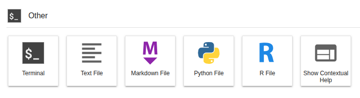
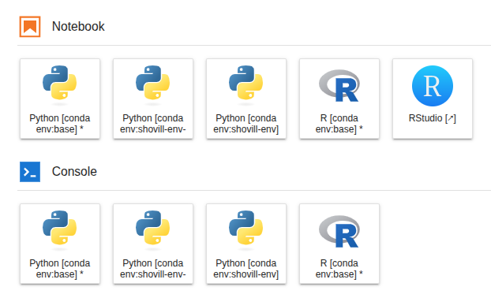
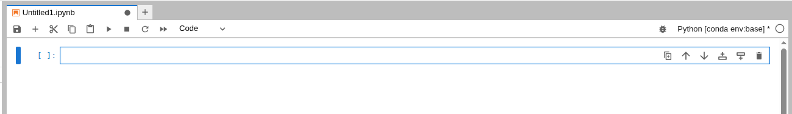
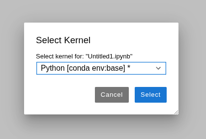
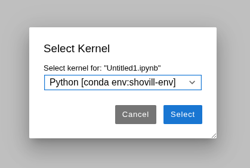
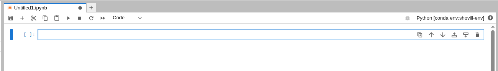

Using conda#
conda is a package and environment management system that helps you to find and install software without having to worry about dependency issues.
For more information on conda usage see the conda documentation
However, please note that using conda via a JupyterLab environment will be a little different compared to using it locally.
This page will guide you through how to install software using conda with the following sections:
- conda terminology
- Accessing conda
- conda configurations
- Creating a new conda environment
- Using YAML files to build conda environments
- Using conda environments in Jupyter notebooks
- Creating a new mamba environment
conda terminology#
There are a few different terms which we use throughout this page:
- conda - the package manager
- conda packages - compressed files with everything needed to run software
- channels - repositories for conda to look for packages
- bioconda - channel for bioinformatics software
- conda-forge - channel for bioinformatics software
- conda environment - a collection of conda packages and dependencies
Accessing conda#
conda is already installed and ready to use within JupyterLab environments. To access conda, you need to open a terminal.
Select File -> New -> terminal, or you can launch a terminal session from the Other launcher within the main work area:

You'll get a new terminal tab in the activity bar, and will find yourself in a bash shell.
Remember, there is no sudo access via the terminal in JupyterHub and using conda will be a little different compared to using it locally.
conda can be found using the following command:
conda info --envs
Here you can see that the base conda environment is installed at /opt/conda. However, you cannot install new software to the base conda environment.
Since we are running everything inside a JupyterLab environment (a container), any changes made to this part of the filesystem will not be retained once the container is stopped and restarted. This is different to your home dir and team/public share storage which persist.
To avoid any issues, the base environment is configured to be read only. If you try to install to the base conda environment you will see the following error:
EnvironmentNotWritableError: The current user does not have write permissions to the target environment.
environment location: /opt/conda
uid: 1000
gid: 100
To install new software, you will need to make a new conda environment. You can find examples on how to create conda environments below.
conda configurations#
When you first launch a JupyterLab environment, a default .condarc (Conda Runtime Configuration file) is generated at /opt/conda.
When you create any new conda environments, they will automatically be saved to your team share storage at /shared/team/conda/$JUPYTERHUB_USER.
This configuration is due to your home directory being relatively small (20GB) compared to your team share (500GB+) so it is better to use a larger mount. In addition, it is easy to share conda environments with your team members.
As part of this configuration, by default, whenever you create a new environment, ipykernel will also be installed which will allow you to use the environment with Jupyter notebooks. It will appear on the launcher and be available to select within the python notebooks interface. You can still use the environment as usual within a terminal.
Creating a new conda environment#
Conda installs software from channels with a lot of bioinformatics software found in the bioconda channel. The bioconda channel is also dependent on the conda-forge channel. You already have access to these channels and can see them using the following command:
conda config --show channels
channels:
- conda-forge
- bioconda
We will create a new environment and use these channels to install the bacterial genome assembler Shovill for short-read data.
You can search which versions of shovill are available to install:
conda search shovill
Please note this may take a few minutes to run, so be patient.
Loading channels: done
# Name Version Build Channel
shovill 0.7.1 pl5.22.0_0 bioconda
shovill 0.7.1 pl5.22.0_1 bioconda
shovill 0.7.1 pl5.22.0_2 bioconda
shovill 0.8.0 pl5.22.0_0 bioconda
shovill 0.9.0 1 bioconda
shovill 0.9.0 pl5.22.0_0 bioconda
shovill 1.0.0 0 bioconda
shovill 1.0.1 0 bioconda
shovill 1.0.4 0 bioconda
shovill 1.0.4 1 bioconda
shovill 1.0.9 0 bioconda
shovill 1.1.0 0 bioconda
shovill 1.1.0 hdfd78af_1 bioconda
shovill 1.1.0 hdfd78af_2 bioconda
shovill 1.4.1 hdfd78af_0 bioconda
shovill 1.4.2 hdfd78af_0 bioconda
Here you can see all the available versions to install. We will use the most up to date version available.
We will create a new environment named shovill-env containing shovill v1.4.2. You will need to confirm the install with y to proceed:
conda create --name shovill-env shovill=1.4.2
Tip
If you see the error CondaValueError: prefix already exists, then there is already a conda environment using the same name, so you will need to pick a different name !
When conda has finished setting up the environment, you can run the following command to activate the environment:
conda activate shovill-env
(shovill-env) jovyan:~$
shovill --version
shovill 1.4.2
To list which packages and dependencies are installed in your shovill-env environment you can run the following command:
conda list
To install a new software package within your currently activated environment you can run the following command:
conda install $packageName
To deactivate your current conda environment you can run the following command:
conda deactivate
To see a list of all environments you can run the following command:
conda info --envs
It will look as follows with the location as /shared/team/conda/$JUPYTERHUB_USER/env_name:
# conda environments:
#
# * -> active
# + -> frozen
base /opt/conda
shovill-env /shared/team/conda/michaelamatthews.tutorials/shovill-env
This will update as you and your team create more conda environments.
To delete an environment you can use the following command, you will need to confirm the deletion with y to proceed:
conda env remove -n shovill-env
A full list of conda commands can be found using the conda help command:
conda --help
usage: conda [-h] [-v] [--no-plugins] [-V] COMMAND ...
conda is a tool for managing and deploying applications, environments and packages.
options:
-h, --help Show this help message and exit.
-v, --verbose Can be used multiple times. Once for detailed output, twice for INFO logging, thrice for DEBUG logging, four times for TRACE logging.
--no-plugins Disable all plugins that are not built into conda.
-V, --version Show the conda version number and exit.
commands:
The following built-in and plugins subcommands are available.
COMMAND
activate Activate a conda environment.
check Display a health report for your environment (alias for doctor).
clean Remove unused packages and caches.
commands List all available conda subcommands (including those from plugins). Generally only used by tab-completion.
compare Compare packages between conda environments.
config Modify configuration values in .condarc.
create Create a new conda environment from a list of specified packages.
deactivate Deactivate the current active conda environment.
doctor Display a health report for your environment.
env Create and manage conda environments.
export Export a given environment
info Display information about current conda install.
init Initialize conda for shell interaction.
install Install a list of packages into a specified conda environment.
list List installed packages in a conda environment.
menuinst A subcommand for installing and removing shortcuts via menuinst.
notices Retrieve latest channel notifications.
package Create low-level conda packages. (EXPERIMENTAL)
remove (uninstall)
Remove a list of packages from a specified conda environment.
rename Rename an existing environment.
repoquery Advanced search for repodata.
run Run an executable in a conda environment.
search Search for packages and display associated information using the MatchSpec format.
update (upgrade) Update conda packages to the latest compatible version.
Using YAML files to build conda environments#
You can also create conda environments using YAML files e.g environment.yml. This is great if you want to recreate an conda environment with the exact same software and dependency versions elsewhere.
You can export an existing active conda environment into a YAML file:
conda activate shovill-env
conda env export > environment.yml
This file will contain the name of the environment, the channel and dependencies required to install like so:
name: shovill-env
channels:
- conda-forge
- bioconda
dependencies:
- _openmp_mutex=4.5=20_gnu
- alsa-lib=1.2.16.1=hb03c661_0
- asttokens=3.0.1=pyhd8ed1ab_0
- bwa=0.7.19=h577a1d6_1
- bzip2=1.0.8=hda65f42_9
- c-ares=1.34.6=hb03c661_0
- ca-certificates=2026.6.17=hbd8a1cb_0
- cairo=1.18.4=he90730b_1
- comm=0.2.3=pyhe01879c_0
- csvtk=0.37.0=ha770c72_1
- debugpy=1.8.21=py310h25320af_0
- decorator=5.3.1=pyhd8ed1ab_0
- exceptiongroup=1.3.1=pyhd8ed1ab_0
- executing=2.2.1=pyhd8ed1ab_0
- flash=1.2.11=hadc24fc_2
- font-ttf-dejavu-sans-mono=2.37=hab24e00_0
- font-ttf-inconsolata=3.000=h77eed37_0
- font-ttf-source-code-pro=2.038=h77eed37_0
- font-ttf-ubuntu=0.83=h77eed37_3
- fontconfig=2.18.1=h27c8c51_0
- fonts-conda-ecosystem=1=0
- fonts-conda-forge=1=hc364b38_1
- giflib=5.2.2=hd590300_0
- graphite2=1.3.15=hecca717_0
- harfbuzz=14.2.1=h6083320_0
- htslib=1.23.1=h633afcb_0
- icu=78.3=h33c6efd_0
- ipykernel=7.3.0=pyha191276_0
- ipython=8.37.0=pyh8f84b5b_0
- jedi=0.19.2=pyhd8ed1ab_1
- jupyter_client=8.9.1=pyhcf101f3_0
- jupyter_core=5.9.1=pyhc90fa1f_0
- kernel-headers_linux-64=3.10.0=he073ed8_18
- keyutils=1.6.3=hb9d3cd8_0
- kmc=3.2.4=h5ca1c30_4
- krb5=1.22.2=ha1258a1_0
- lcms2=2.19.1=h0c24ade_1
- ld_impl_linux-64=2.45.1=default_hbd61a6d_102
- lerc=4.1.0=hdb68285_0
- libcups=2.3.3=h7a8fb5f_6
- libcurl=8.20.0=hcf29cc6_0
- libdeflate=1.25=h17f619e_0
- libedit=3.1.20250104=pl5321h7949ede_0
- libev=4.33=hd590300_2
- libexpat=2.8.1=hecca717_1
- libffi=3.5.2=h3435931_0
- libfreetype=2.14.3=ha770c72_0
- libfreetype6=2.14.3=h73754d4_0
- libgcc=15.2.0=he0feb66_19
- libgcc-ng=15.2.0=h69a702a_19
- libglib=2.88.1=h0d30a3d_2
- libgomp=15.2.0=he0feb66_19
- libiconv=1.18=h3b78370_2
- libjpeg-turbo=3.1.4.1=hb03c661_0
- liblzma=5.8.3=hb03c661_0
- libnghttp2=1.68.1=h877daf1_0
- libnsl=2.0.1=hb9d3cd8_1
- libpng=1.6.58=h421ea60_0
- libsodium=1.0.22=h280c20c_1
- libsqlite=3.53.2=h0c1763c_0
- libssh2=1.11.1=hcf80075_0
- libstdcxx=15.2.0=h934c35e_19
- libstdcxx-ng=15.2.0=hdf11a46_19
- libtiff=4.7.1=h9d88235_1
- libuuid=2.42.2=h5347b49_0
- libwebp-base=1.6.0=hd42ef1d_0
- libxcb=1.17.0=h8a09558_0
- libxcrypt=4.4.36=hd590300_1
- libzlib=1.3.2=h25fd6f3_2
- lighter=1.1.3=h077b44d_2
- llvm-openmp=8.0.1=hc9558a2_0
- matplotlib-inline=0.2.2=pyhd8ed1ab_0
- megahit=1.2.9=haf24da9_8
- ncurses=6.6=hdb14827_0
- nest-asyncio2=1.7.2=pyhcf101f3_0
- openjdk=25.0.2=ha668962_0
- openmp=8.0.1=0
- openssl=3.6.3=h35e630c_0
- packaging=26.2=pyhc364b38_0
- parso=0.8.7=pyhcf101f3_0
- pcre2=10.47=haa7fec5_0
- perl=5.32.1=7_hd590300_perl5
- perl-file-spec=3.48_01=pl5321hdfd78af_2
- perl-findbin=1.54=pl5321hdfd78af_0
- pexpect=4.9.0=pyhd8ed1ab_1
- pickleshare=0.7.5=pyhd8ed1ab_1004
- pigz=2.8=h421ea60_2
- pilon=1.24=hdfd78af_0
- pip=26.1.2=pyh8b19718_0
- pixman=0.46.4=h54a6638_1
- platformdirs=4.10.0=pyhcf101f3_0
- prompt-toolkit=3.0.52=pyha770c72_0
- psutil=7.2.2=py310h139afa4_0
- pthread-stubs=0.4=hb9d3cd8_1002
- ptyprocess=0.7.0=pyhd8ed1ab_1
- pure_eval=0.2.3=pyhd8ed1ab_1
- pygments=2.20.0=pyhd8ed1ab_0
- python=3.10.20=h267e890_1_cpython
- python-dateutil=2.9.0.post0=pyhe01879c_2
- python_abi=3.10=8_cp310
- pyzmq=27.1.0=py310ha71cbf4_3
- readline=8.3=h853b02a_0
- samclip=0.4.0=hdfd78af_1
- samtools=1.23.1=ha83d96e_0
- seqkit=2.13.0=he881be0_0
- setuptools=82.0.1=pyh332efcf_0
- shovill=1.4.2=hdfd78af_0
- six=1.17.0=pyhe01879c_1
- skesa=2.5.1=h077b44d_2
- spades=3.15.5=h5fb382e_3
- stack_data=0.6.3=pyhd8ed1ab_1
- sysroot_linux-64=2.17=h0157908_18
- tk=8.6.13=noxft_h366c992_103
- tornado=6.5.7=py310h7c4b9e2_0
- traitlets=5.15.1=pyhcf101f3_0
- trimmomatic=0.40=hdfd78af_0
- typing_extensions=4.15.0=pyhcf101f3_0
- tzdata=2025c=hc9c84f9_1
- velvet=1.2.10=h577a1d6_9
- wcwidth=0.8.1=pyhd8ed1ab_0
- wheel=0.47.0=pyhd8ed1ab_0
- xorg-libice=1.1.2=hb9d3cd8_0
- xorg-libsm=1.2.6=he73a12e_0
- xorg-libx11=1.8.13=he1eb515_0
- xorg-libxau=1.0.12=hb03c661_1
- xorg-libxdmcp=1.1.5=hb03c661_1
- xorg-libxext=1.3.7=hb03c661_0
- xorg-libxfixes=6.0.2=hb03c661_0
- xorg-libxi=1.8.3=hb03c661_0
- xorg-libxrandr=1.5.5=hb03c661_0
- xorg-libxrender=0.9.12=hb9d3cd8_0
- xorg-libxt=1.3.1=hb9d3cd8_0
- xorg-libxtst=1.2.5=hb9d3cd8_3
- zeromq=4.3.5=h09e67af_11
- zlib=1.3.2=h25fd6f3_2
- zstd=1.5.7=hb78ec9c_6
prefix: /shared/team/conda/michaelamatthews.tutorials/shovill-env
The active environment can then be deactivated again:
conda deactivate
Tip
Remember to change the environment name if an environment with the same name already exists where you wish to install the new environment.
To create a conda environment from this YAML file you can use the following command:
conda env create -f environment.yml
Using conda environments in Jupyter notebooks#
As described within the conda configuration section, all environments have ipykernel installed by default. This will allow you to use the environments with Jupyter notebooks or on the Console.
Your environments will appear on the launcher:

And also be available to select within the python notebooks interface. Just select the kernel on the top right of the notebook:

Usually this will be "Python [conda env:root]" or "Python 3 (ipykernel)".
Use the drop down menu to choose the environment e.g "Python [conda env:shovill-env]":


This will update the kernel on the top right of the notebook:

After changing the kernel, it's worth restarting the kernel and running your code cells again for the environment to be fully registered.
See our Jupyter notebook page for more information on using JupyterLab notebooks.
Creating a new mamba environment#
Mamba is a re-implementation of conda with faster dependency solving (i.e. it's a faster way of building conda environments!). It uses the same command line parser as conda. Mamba is already installed and ready to use within JupyterLab environments.
We will create a new environment named shovill-env-3 containing shovill v1.4.2. Simply replace the usual conda command with mamba. You will need to confirm the install with y to proceed:
mamba create --name shovill-env-3 shovill=1.4.2
When mamba has finished setting up the environment, you can run the following command to activate the environment:
mamba activate shovill-env-3
You may encounter an error with suggested solutions like so:
'mamba' is running as a subprocess and can't modify the parent shell.
Thus you must initialize your shell before using activate and deactivate.
It provides a few fixes for this error:
To initialize the current bash shell, run:
$ eval "$(mamba shell hook --shell bash)"
and then activate or deactivate with:
$ mamba activate
To automatically initialize all future (bash) shells, run:
$ mamba shell init --shell bash --root-prefix=~/.local/share/mamba
If your shell was already initialized, reinitialize your shell with:
$ mamba shell reinit --shell bash
Once initialised and activated successfully, the prompt will update to show that the environment is active like so:
(shovill-env-3) jovyan:~$
You can then run the following to check Shovill has installed correctly:
shovill --version
This will report the version of Shovill you installed:
shovill 1.4.2
To deactivate your current mamba environment you can run the following command:
mamba deactivate
Mamba environments will also appear within your conda env list:
conda info --envs
It will look as follows with the location as /shared/team/conda/$JUPYTERHUB_USER/env_name:
# conda environments:
#
# * -> active
# + -> frozen
base /opt/conda
shovill-env /shared/team/conda/michaelamatthews.tutorials/shovill-env
shovill-env-2 /shared/team/conda/michaelamatthews.tutorials/shovill-env-2
shovill-env-3 /shared/team/conda/michaelamatthews.tutorials/shovill-env-3
This will update as you and your team create more conda/mamba environments.
Most conda and mamba commands are the same but a full list of mamba commands can be found using the mamba help command:
mamba –help
You will see similar output as follows:
Version: 2.6.0
mamba [OPTIONS] [SUBCOMMAND]
OPTIONS:
-h, --help Print this help message and exit
--version
Configuration options:
--rc-file FILE1 FILE2...
Paths to the configuration files to use
--no-rc Disable the use of configuration files
--no-env Disable the use of environment variables
Global options:
-v, --verbose Set verbosity (higher verbosity with multiple -v, e.g. -vvv)
--log-level ENUM:value in {critical->5,debug->1,error->4,info->2,off->6,trace->0,warning->3} OR {5,1,4,2,6,0,3}
Set the log level
-q, --quiet Set quiet mode (print less output)
-y, --yes Automatically answer yes on prompted questions
--json Report all output as json
--offline Force use cached repodata
--dry-run Only display what would have been done
--download-only Only download and extract packages, do not link them into
environment.
--experimental Enable experimental features
--use-uv Whether to use uv for installing pip dependencies. Defaults to
false.
Prefix options:
-r, --root-prefix PATH Path to the root prefix
-p, --prefix PATH Path to the target prefix
--relocate-prefix PATH
Path to the relocation prefix
-n, --name NAME Name of the target prefix
SUBCOMMANDS:
shell Generate shell init scripts
create Create new environment
install Install packages in active environment
update Update packages in active environment
repoquery Find and analyze packages in active environment or channels
remove, uninstall Remove packages from active environment
list List packages in active environment
package Extract a package or bundle files into an archive
clean Clean package cache
config Configuration of micromamba
info Information about micromamba
constructor Commands to support using micromamba in constructor
env See `mamba/micromamba env --help`
activate Activate an environment
run Run an executable in an environment
ps Show, inspect or kill running processes
auth Login or logout of a given host
search Find packages in active environment or channels
This is equivalent to `repoquery search` command
What is next ?#
Once you know some conda basics, you can check what storage is available.